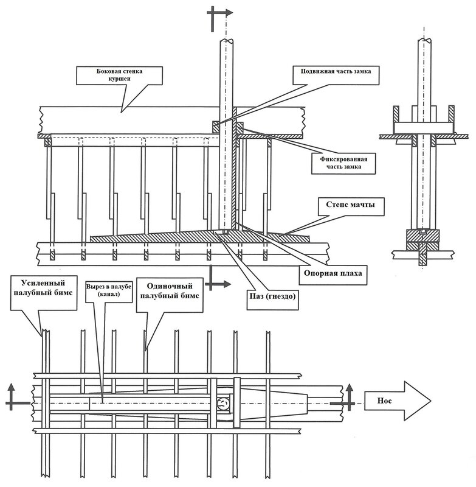
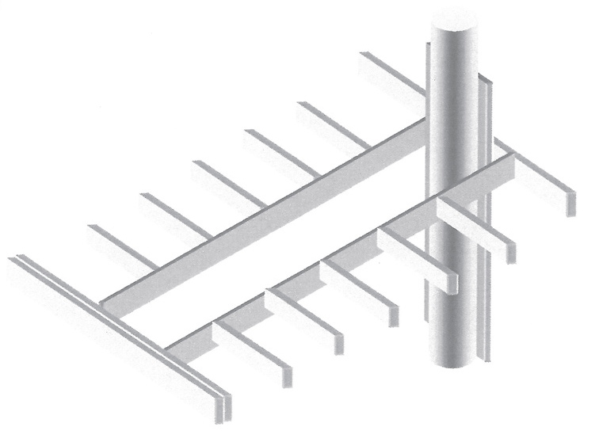
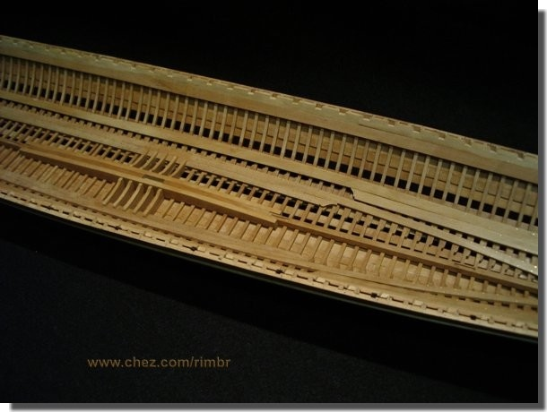
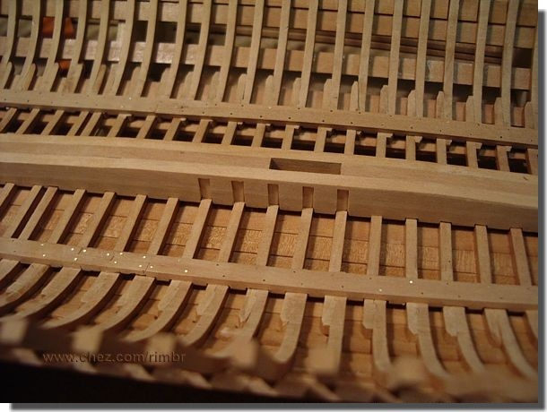
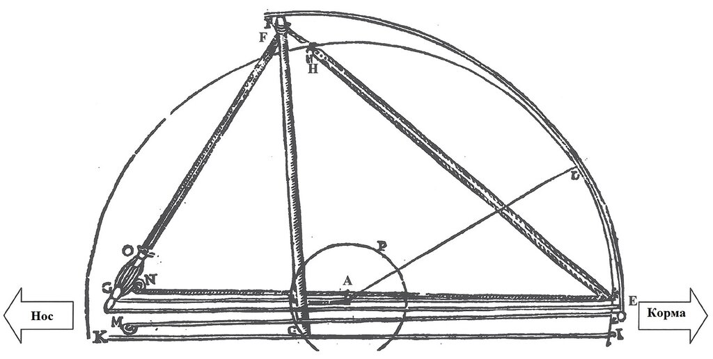

Мачты рубить! Инженерное решение
Инженер становится на нейтральную почву и говорит: - Это не мое дело...
Гл. Успенский. Бог грехам терпит
Прежде чем говорить о механизме опускания мачты галеры на палубу оценим ее размеры и вес.
Joseph Eliav (Университет Хайфы) вычислил средние значения этих параметров по данным, извлеченным из основных трактатов по галеростроению того времени. Эти значения сведены в следующую таблицу:
|
Грот-мачта |
Фок-мачта |
| Высота (м) |
22 |
16,5 |
| Диаметр у основания (м) |
0,51 |
0,33 |
| Диаметр у топа (м) |
0,38 |
0,21 |
(Если кого-то заинтересует более подробная информация о размерах мачт, ее можно найти в более ранних моих записях.)
Нам известно, что мачты изготавливали из древесины хвойных пород: сосны, ели, пихты. Ее плотность (при влажности 12 %) колеблется от 0,45 до 0,53 г/см3. Возьмем значение по верхнему пределу. Кроме того, на топе каждой мачты крепили большой блок – кальцет, который был изготовлен из ореха или другого твердого дерева. Несложный расчет показывает, что вес грот-мачты с такими размерами будет около 1800 кг, а вес фок-мачты – около 700 кг.
Схему крепления мачт на галерах можно найти в нескольких трактатах XVI-XVII вв. Приведем наиболее информативное изображение из сочинения Йозефа Фуртенбаха (Joseph Furttenbach, Architectura Navalis, 1629)
Опять же усредненное и упрощенное изображение, которое облегчит нам дальнейшие рассуждения, возьмем из упомянутой в прошлый раз статьи Eliav'а.

А для лучшего понимания – приведем и изометрию:

Вырез в палубе галеры (канал), обеспечивающий опускание мачты.
Кратко повторим описание этой конструкции, которое мы приводили в наших предыдущих постах. Грот-мачта основывается на массивной балке, степсе, который, в свою очередь, опирается на кильсон галеры. С каждой боковой стороны степса крепятся усиливающие его элементы, которые на галерном языке Прованса называли escasses , а в Италии scassa или cassa. Вот как этот узел выглядит на модели.


Гнездо для мачты в степсе имеет 8,2 см в ширину, почти полметра в длину и 16,3 см в длину. На шпоре мачты, по данным некоторых источников, имелся шип, который вставлялся в гнездо и имел возможность перемещаться в нем в продольном направлении. Но в большинстве сочинений на эту тему наличие такого шипа не отмечается.
В том месте, где мачта проходит через палубу, устанавливали особый замок - clef de l'arbre по-французски; французы странные люди: то что у нас называется замком у них – ключом (clef). Мы уже писали об этом элементе конструкции, сейчас напомним, как он выглядел на модели:
А теперь обратимся к тому процессу, который дал повод для появления нашего рассказа: процессу опускания мачты галеры на ее палубу. Здесь нам очень повезло: имеется подробнейшее описание этой операции у Кресченцио в его Nautica Mediterranea (стр.120–122). Вот схема из этого трактата:

Главным элементом механизма является пара блоков (G и O), образующих мощные тали. Выглядели они примерно так.
Блок G глухо закреплен на носу галеры, а блок O с помощью троса FO – на топе грот-мачты. Два длинных стропа этих блоков шли вдоль всей галеры к корме, где, пройдя через блоки Е, поворачивали снова к носу (EM и ΕΝ). Если начать тянуть эти тросы, расстояние между блоками будет сокращаться, мачта начнет кренитьсяь к носу; если тросы травить, то наоборот, расстояние между блоками увеличивается и мачта клонится к корме.. От падения ее удерживал трос ЕН, протянутый от топа мачты к корме, где он заводился в блок.
Если требовалось рубить мачту, матросы удаляли кормовую съемную часть замка и тянули трос ЕН. Гребцы с обоих бортов галеры травили тросы, которые шли вдоль банок, удерживая при этом мачту от падения; расстояние между блоками G и O увеличивалось, общая длина тросов GF становилась больше и топ мачты начинал клониться к корме вдоль дуги FE с центром у шпора мачты. Когда мачта достигала двойного бимса (точка А в конце выреза (канала), см. схему в начале поста), центром вращения становился как раз этот двойной бимс. Теперь топ мачты начинает двигаться по дуге DE, в то время как ее шпор – по нижней части дуги окружности Р. Движение продолжается, пока мачта не займет горизонтальное положение внутри куршеи.
Насколько реально описанная операция может быть осуществлена на практике мы оценим в следующий раз.